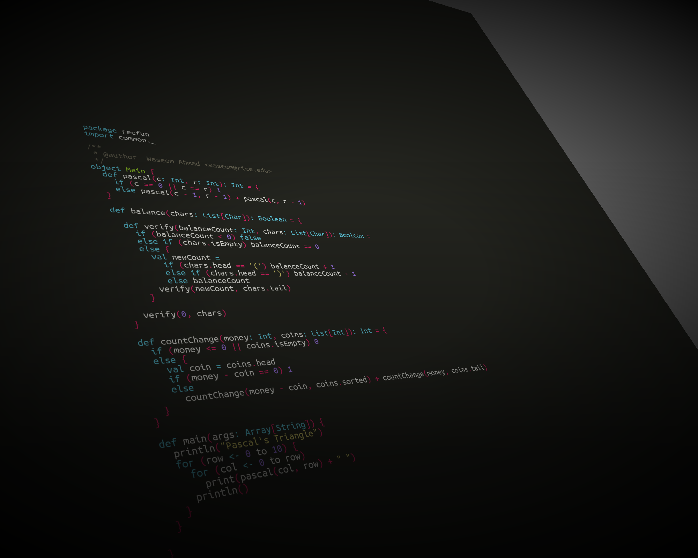
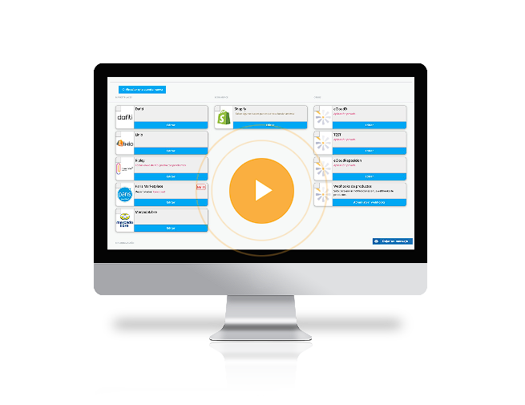
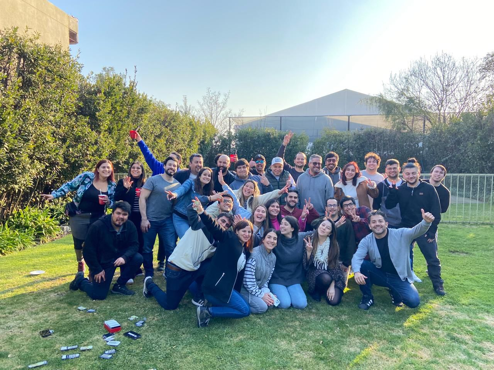

Career path
A summary of my professional experience and career progression
Centry
2017 - 2018
Centry was an advanced integration platform for marketplaces that centralized and optimized sales management across multiple channels. It enabled companies to view and control orders, messages, and inventory from a single interface, facilitating an efficient and coordinated operation across all connected marketplaces.
Source: Centry.cl

Internship
First professional internship as a civil computer engineer at the end of 2017, which was partially extended during 2018 in the role of junior software developer. During this time, I kept a detailed log of my tasks.

Tech stack
The tech stack comprised MongoDB as the database, Ruby on Rails as the web application framework, and JavaScript for client-side scripting. Additionally, Bitbucket was used for version control, and Postman was employed for API integration and testing, allowing for thorough testing and efficient management of RESTful HTTP methods.

Sync tools & docs
With the team, we developed a tool to visualize product synchronization errors between various platforms and the application, aiding in monitoring critical issues for app functionality. Additionally, I improved project documentation and provided client support while worked with platforms like BSale, WooCommerce, Shopify and Linio.

Product scraper
My greatest achievement was developing a tool to import a client's product information from MercadoLibre into an Excel file. Using MercadoLibre's API and Python, I created a customizable importer that extracted detailed product data such as SKU, color, size, and images. This tool streamlined the team's tasks and supported the business area in managing user requests and requirements, thanks to its intuitive and efficient interface.

Cuprum AFP
2022 - Present
Principal Cuprum's Digital Experience (DX) team focused on developing and optimizing digital products through agile methodologies and continuous deployment. The team enhanced customer-facing platforms, ensuring a seamless, secure, and efficient user experience for managing pension funds and investments. This included implementing innovative solutions, improving system performance, and integrating modern technologies to drive customer engagement and support long-term financial goals.
Source: Cuprum.cl

Team
During my first few months, I received training as part of the web team. Later, we established a new Customer Support team, which was integrated with the Artificial Intelligence team. Following a restructuring, I transitioned to the Advice and Support team, which eventually evolved into Cuprum Advice. This team became a key player in the company's new business strategy, focused on developing tools that provided personalized advice to our customers.

Methodologies
The year was divided into four quarters, each functioned like a sprint in agile methodologies. At the end of each quarter, metrics and KPIs were calculated to drive team improvements and goals. Each sprint focused on developing high-value commercial and financial tools or features. User stories, tasks, and deployments were tracked using a Kanban-style board in Target Process.

Development
The core stack included the Vue framework and .NET, with JavaScript and TypeScript for the front end, using Node as the runtime environment. For the backend, we primarily used C#, JavaScript/TypeScript, AWS, and Node. Figma was used for app design. Teams typically comprised 4-5 developers, 1 UX designer, 2 product analysts, and 1 product manager. We utilized internal libraries, visual component libraries integrated with Vue, and had extensive documentation, templates, and technical support for development.

Version control
We used GitHub for version control after migrating from Bitbucket, leveraged GitHub Actions for automated deployments and code scans to detect security alerts and dependency issues. Projects followed the Gitflow workflow, with development and production branches, and version updates aligned with SemVer. This approach ensured continuous testing (QA, CI) before code reached production, maintaining high-quality releases.

Cloud computing
Our products were hosted on AWS, primarily in S3, with dev, QA, and prod environments. We built Lambdas that consumed both newly created and legacy APIs. Additionally, we undertook a project to migrate all services to the cloud, though some systems still ran on on-premise servers, where deployments were managed via Request for Changes (RFC), utilizing backup, pre-prod, and load balancing to ensure stability. We continued to leverage AWS tools, such as Step Functions and CloudWatch for monitoring, in our daily operations.

Private website
The project focused on full-stack development using the .NET framework with C# in Visual Studio, enhanced Cuprum's private client website built on MVC architecture. It involved service integration, JavaScript for the front-end, and automation through Jenkins for CI/CD. The system included traceability, logging, financial products, and an AI-powered chatbot for customer support.

Complements
Every Tuesday morning, engineering chapters were held to work on initiatives alongside regulatory projects. Teams proposed ideas to improve company processes through development, research, and solution design. Additionally, the annual DX Hackathon fostered positive competition, where teams presented innovative, strategic ideas for the company, with prizes and recognition awarded to the best projects.

Miscellaneous
Collaboration with teams like Salesforce, Web, and Operations was key, along with monitoring via Dynatrace. Team-building activities, retrospectives, career development plans, and technology/English courses were regularly offered. Agile practices included daily standups, plannings, and user story refinement using poker planning for estimates. Unit tests were integrated with frameworks like Jest and Vitest, with a coverage goal of 80% per project. Linting ensured clean code and adherence to SOLID principles, while peer-reviewed pull requests maintained quality. We also handled regulatory projects from the Superintendence of Pensions. Documentation was managed in Confluence, security via JWT tokens and encryption, and we developed reusable encapsulated components for other projects.

© Untitled. All rights reserved. Design: HTML5 UP.